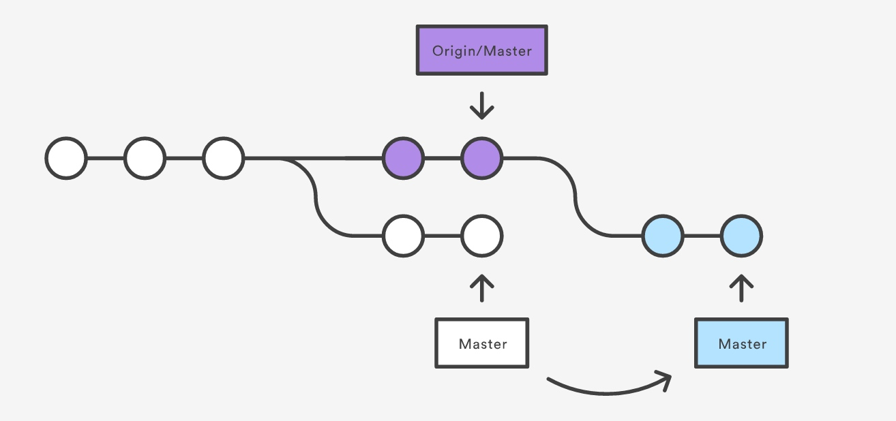

第一步：管理员新建项目
- 使用
sckf帐号在Git@OSC中建立新的项目：一定要建私有类型的项目

在设置中要求团队的所有人，默认都设置为
开发者马琳(绒球小喵)：651024486@qq.com 王钊(王钊)：wangzhao@hao24.cn 陈文静(chenwenjing099)：1012573831@qq.com 陈嵚(Nathan)：qche7764@uni.sydney.edu.au 秦义胜：
第二步：导入项目
一定要写
.gitignore文件
新建一个项目
echo "# tett" >> README.md
git init
git add README.md
git commit -m "first commit"
git remote add origin XXX
git push -u origin master
或者将本地项目放到git上
git remote add origin XXX
vim .gitignore
git add .
git commit -m 'first commit'
git push -u origin master
.gitignore文件
.idea/
*.iml
/out/
*.class
target/
.svn/
第三步：在phabricator设置Code Review
通知 陈嵚
第四步：按照功能点建立分支
git checkout -b hotfix
...做写修改..
git add .
git commit -m '修复XXXX'
git push origin hotfix
第五步：申请合并到主分支
在Git@OSC页面中切换到hotfix分支
发起pull request请求，请求从hotfix -> master
取决于你的权限，你会看到：

pull request合并后删除提交分支 必选！
或者

第六部：Reviewer审查完毕，合并代码到主分支

Reviewer负责删除已经合并的分支
范例
--rebase命令的作用是将先从远程master中下载最新的数据到我的分支，然后再将我的提交整合到这个分支的最顶端。
The --rebase option tells Git to move all of Mary's commits to the tip of the master branch after synchronizing it with the changes from the central repository.
git pull --rebase origin master

如果两个人在对不同的文件进行处理，那么他们基本不可能会产生冲突。如果真的有冲突产生，Git会暂停rebase并且打印出冲突信息
If Mary and John are working on unrelated features, it's unlikely that the rebasing process will generate conflicts. But if it does, Git will pause the rebase at the current commit and output the following message, along with some relevant instructions:
CONFLICT (content): Merge conflict in <some-file>
使用git status可以查看冲突文件信息
Mary would simply run a git status to see where the problem is. Conflicted files will appear in the Unmerged paths section:
# Unmerged paths:
# (use "git reset HEAD <some-file>..." to unstage)
# (use "git add/rm <some-file>..." as appropriate to mark resolution)
#
# both modified: <some-file>
解决好了冲突，就可以使用git add把修改的冲突文件重新加进去，再使用git rebase --continue继续rebase
Then, she can stage the file(s) in the usual fashion and let git rebase do the rest:
git add <some-file>
git rebase --continue
Feature Branch Workflow
git checkout -b marys-feature master
...
git status
git add <some-file>
git commit
git push -u origin marys-feature
// This serves as a convenient backup
在将自己的修改合并到主分支的时候，需要发起一个pull request，让大家都知道自己做了什么
Before merging it into master, she needs to file a pull request letting the rest of the team know she's done.
She files the pull request in her Git GUI asking to merge marys-feature into master
在发起pull request之后，还可以去修改自己的文件，所有修改会显示在pull request中
To make the changes, Mary uses the exact same process as she did to create the first iteration of her feature. She edits, stages, commits, and pushes updates to the central repository. All her activity shows up in the pull request, and Bill can still make comments along the way.
其他人可以将别人的pull request拉倒自己本地来修改，任何提交也会显示在pull request中
If he wanted, Bill could pull marys-feature into his local repository and work on it on his own. Any commits he added would also show up in the pull request.
一旦审核人统一接受pull request，就可以合并到主分支了
Once Bill is ready to accept the pull request
// check out their master branch
git checkout master
// make sure it's up to date
git pull
// merge the central repository's copy of marys-feature
git pull origin marys-feature
// push back to origin
git push